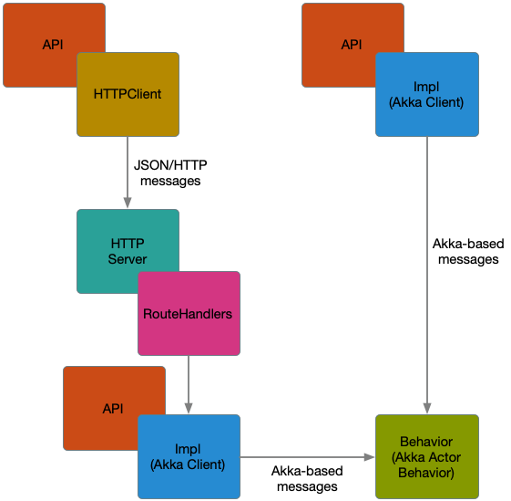

ESW Application Architecture
Goal of this section is to provide walk through of the low level design of the ESW applications. This section is targeted towards future maintainers of the ESW. It should help them understand different parts of the ESW applications and easily navigate through the codebase.
The applications in ESW are not CSW Assemblies and HCDs, they are registered in the Location Service with ComponentType Service. The ESW applications have been constructed in a similar way to make the code easier to understand and test. This section describes the parts of an ESW application and introduces the terminology used in the code base.
ESW applications are divided into following three major categories:
- Actor based, for example, Agent Akka Application.
- HTTP based, for example, Agent Service, Gateway Application.
- Embedded HTTP + Actor based - Such applications exposes two protocols for communication, one is HTTP and other is Akka. for example, ESW OCS (Sequencer) Application.
Most if not all the ESW applications follows the following conventions for organizing the codebase:
- Main - Runnable application responsible for starting the ESW service.
- Wiring - Initializes all the dependencies and wires them together.
- HttpService - Starts and registers the HTTP service with Location Service.
- Route Handlers - Defines two types of the routes for the HTTP service i.e. HTTP routes and Websocket routes.
- API - Interface defining the contract for the Service
- Impl - Server side implementation of the API.
- Clients - Two types of clients implementing API i.e. HTTP and Actor clients.
- Actor Behavior - Defines the behavior of the Service. This includes actual implementation of backend service logic.
- Codecs - Encoders and Decoders required for the remote communication. This includes codecs required for Actors and HTTP service.
The Main Class
Main class is the entry point for all the ESW applications, and responsible for specifying the command line arguments, options and parsing them to domain models.
This capability is provided by extending Main class with EswCommandApp which is part of case-app. case-app is a command line argument parsing library for scala.
With CaseApp, main class arguments have commands and options. A class is associated with each supported command and that class has fields corresponding to each supported program option. These model classes represent the command and its options.
Examples of main classes are:
-
The User Interface Gateway Service application class is: GatewayMain and the
startcommand class is: ServerCommand. -
The Agent Service application class is: AgentServiceApp and the
startcommand class is: AgentServiceAppCommand.
The Wiring Class
When the main class executes it uses the command and arguments to create a new instance of a Wiring class. The Wiring class is the place where all resources or dependencies the application uses are initialized.
Some of the common examples of instances and resources created by Wiring are: ActorSystem, API implementation instances, Application Settings, HttpService, HTTP and Websocket handlers and clients to connect to other services like Location Service, Event Service etc
Examples of application Wiring:
-
For the User Interface Gateway, the wiring class is: GatewayWiring.
-
For the Agent Service, the wiring class is: AgentServiceWiring.
-
For the Sequence Manager, the wiring class is: SequenceManagerWiring.
ESW architecture classes are usually named to describe their function in the application architecture (e.g., SequenceManagerWiring or AgentServiceAppMain).
The Http Service
As mentioned in the introductory section, many ESW applications for example, Gateway, ocs-app (Sequencer), Sequence Manager etc. are either HTTP based or Embedded HTTP + Actor based, and requires capabilities to start and register with Location Service.
We have extracted out these common capabilities in independent module called esw-http-core. This module has class HttpService which is responsible for initializing a HTTP Server and registering it with Location Service.
esw-http-core module has other common utilities like,
- ActorRuntime - Small wrapper over
ActorSystemresponsible for providing implicitActorSystem,ExecutionContext, starting Logging Service and closing resources on shutdown. - Settings - Reading application specific configurations like service prefix, HttpConnection (Used to register with Location Service) etc
The User Interface Gateway is only registered as an HTTP service in Location Service. Because of its role in the TMT architecture as the gateway for HTTP requests from browser-based user interfaces, and its role in authentication of users, it does not provide a public Akka location in the Location Service.
Route Handlers
An HTTP Service uses routes, which map the incoming requests to the code that uses the information in the request to handle the request. A route handler is the application-specific code that maps the request to the application code. There may be two types of route handlers in an ESW application: PostHandler and WebsocketHandler.
ESW infrastructure services do not use REST-like path-oriented requests. Rather, all requests are encoded as JSON and POSTed to the service. This is common in services that are not directly user-facing. This also simplifies the route handling since there are only a few routes. The content of the requests is documented in the contracts.
PostHandler
This handler implements routes corresponding to HTTP POST requests. The underlying infrastructure used to handle HTTP requests has been placed in a common ESW library called msocket.
Examples of PostHandler are:
-
For the User Interface Gateway, the POST route handler is: GatewayPostHandler.
-
For the Agent Service, the POST route handler is: AgentServicePostHandler.
WebsocketHandler
Some applications need to keep open connections. For instance, the User Interface Gateway needs to subscribe to events from Event Service or wait for command responses fom Command Service. In this case, a client posts a subscription request and the result is a WebSocket.
Since, WebSocket requests work on top of the HTTP protocol, routes in the WebsocketHandler are also handled by HttpService along with PostHandler routes.
Examples of WebsocketHandler are:
-
For the User Interface Gateway, the WebSocket handler is: GatewayWebsocketHandler.
-
For the Sequencer, the WebSocket handler is: SequencerWebsocketHandler.
Applications that do not need streaming data do not have a WebSocketHandler. For instance, the Agent Service does not have a WebSocketHandler.
API Classes
The Application Programmer Interface or API classes define the functionality of the service. The API class is used and implemented by the service clients.
For reference, the following figure shows how the API classes and the other classes in this section are related.

Examples of service API classes are:
-
For the Sequencer, the API is: SequencerApi.
-
For Sequence Manager, the API is: SequencerManagerApi.
Because an ESW application often provides both an Akka-based client and an HTTP-based client, the API class may be used in 2 places.
Impl Classes (Akka Clients)
The Impl or implementation classes are one implementation of the API. In an ESW application based on Akka, the service itself is implemented as Akka-based actors in the Behavior classes.
The API is written as a typical API with methods that are called and return results.
Most of the time, the impl classes are converting the API method to an Akka-based message and sending the message to the Behavior actor. If it gets a response as a message, it converts it to the correct type for the API.
Examples of impl or Akka client classes are:
-
For the Sequencer, the impl is: SequencerImpl.
-
For Sequence Manager, the impl is: SequencerManagerImpl.
These impl classes can call other services to fulfill the requests or handle it locally using the service’s Behavior classes.
Behavior Classes
At their core, the ESW applications are implemented as Akka Actors. A behavior class is the top level Akka implementation of the service. It is called a behavior because that’s what Akka calls the type returned by a newly constructed typed actor.
Behavior classes receive Akka messages, which are often defined in a protocol package such as this, which includes two message files for the Sequence Manager requests and responses. The Impl classes are clients, and don’t have logic to manage the application state; state and functionality is handled by the actor behavior classes. State-based functionality is often implemented using the Akka actor state machine pattern.
Examples of behavior classes are:
-
For the Sequencer, the behavior is: SequencerBehavior.
-
For Sequence Manager, the behavior is: SequencerManagerBehavior.
-
For Agent, the behavior is: AgentActor.
Codecs (Serialization/Deserialization)
When a request is sent over the network to a service, it needs to be converted from the programming language model and sent over the network in some agreed upon format. Serialization (encoding/marshalling) is the conversion from the programming language model to the network format, and deserialization (decoding/unmarshalling) is the conversion back from the network format to the programming language representation. In CSW/ESW Akka messages between remote actors are serialized into a format called Concise Binary Object Representation or CBOR (see CBOR RFC8949 standard). Messages using the HTTP transport are serialized and deserialized to Javscript Object Notation or JSON (see JSON spec).
For serialization, CSW/ESW applications use the open-source Borer library to automatically generate serialization code that converts model classes to/from the JSON and CBOR formats. One big advantage of this library over others is that it can serialize/deserialize to JSON as well as CBOR.
Codec Classes
In many cases Borer will automatically generate serialization classes or codecs, but messages must be explicitly indicated with a Borer library call. For example in OcsCodecs, the codec for a step in a sequence is created with this line:
implicit lazy val stepCodec: Codec[Step] = deriveCodec
Here deriveCodec does the job of generating decoder/encoder code for serialization/deserialization. These codec classes are parameterized with the model case classes and are marked implicit so that when a class extends this codec class it gets the model class codec automatically. You can even have hierarchy of model classes and only need to provide a top level class/marker trait to automatically derive child class codecs. For example in SequencerServiceCodecs:
implicit lazy val sequencerPostRequestValue: Codec[SequencerRequest] = deriveAllCodecs
Here you see deriveAllCodecs, which causes the generation of decoder/encoder for the complete class hierarchy starting from the top level SequencerRequest.
There are mainly two use cases when you need to serialize/deserialize a request and response:
- Remote Actor Communication (Akka actor)
- HTTP Communication (Akka HTTP
Remote Actor Communication
Actors registers their location with Location Service when they are created. Using this location, other actors or services running on different JVM’s or machine can communicate by message passing. These messages have to undergo some form of serialization (i.e. the objects have to be converted to and from byte arrays). This is where de/serialization (codecs) come into play. We use CBOR format uniformly for serializing/deserializing actor messages. For example, when a Sequencer receives requests from the User Interface Gateway via Akka actors due to a UI call, the message is serialized as CBOR.
The first step for the Akka/CBOR case is to add Borer codecs for message model classes so that encoder/decoders can be derived as described above. An example is: OcsMsgCodecs that extends OcsCodecs used above. This example shows the Borer Codec type parameterized with the message class model classes that are sent to Sequencer in requests and responses.
In order for the Akka infrastructure to see and use the Borer serializing code, a class is created that inherits from the abstract Akka serializer infrastructure class: CborAkkaSerializer that is part of the CSW code and register each of the service message classes.
For the Sequencer messages, this class is called OcsAkkaSerializer. The message classes must also be marked as Serializable, which in this case is done with the OcsAkkaSerializable trait. Both the serializer and the serializable class are present in the configuration of application (through the classpath) so that Akka actors can use them for serialization/deserialization.
The final step needed is configuration to make sure Akka is aware of the special serialization by hooking OcsAkkaSerializer into the Akka infrastructure. For the Sequencer (and any Akka-based app), this is done in the reference.conf file of the clients of Sequencer. As shown below, the ocs-framework-cbor property is set to the class name of OcsAkkaSerializer, and whenever a class is marked with OcsAkkaSerializable Akka will use the ocs-framework-cbor serializer.
akka.actor {
serializers {
ocs-framework-cbor = "esw.ocs.api.actor.OcsAkkaSerializer"
}
serialization-bindings {
"esw.ocs.api.codecs.OcsAkkaSerializable" = ocs-framework-cbor
}
provider = remote
}
This resource file is part of the esw-ocs-api package, so any client or service that depends on this api jar file will be configured to serialize and deserialize Akka CBOR-based messages.
Refer Akka Serialization documentation for more details on how to wire up custom CBOR based serializer up with Akka.
Some of the examples for Actor remote message codecs are OcsCodecs, SequencerServiceCodecs etc
HTTP-based Communication
HTTP based services are implemented using msocket library which usage Akka HTTP under the hood.
MSocket exposes two factories, PostRouteFactory[Req] and WebsocketRouteFactory[Req] for generating HTTP and Websocket routes respectively. Both these factories require implicit decoder in scope, so that Akka HTTP server can decode the incoming HTTP request. This mechanism is called Unmarshalling in Akka HTTPs terminology. These decoders are brought into scope by SequencerWiring extending from SequencerServiceCodecs.
Similarly, PostHandler and WebsocketHandler are responsible for processing incoming HTTP requests and returning HTTP response. Hence, it requires implicit encoders in scope. This mechanism is called Marshalling in Akka HTTPs terminology. In case of SequencerPostHandler and SequencerWebsocketHandler, these encoders are brought into scope using following import import esw.ocs.api.codecs.SequencerServiceCodecs.*
Another place where de/serialization required is while creating HTTP postClient using msocket library. The critical part of this is that the request must be serialized to JSON to be included as the payload to an HTTP POST method and deserialize the JSON response coming from HTTP service.
An example of this is the HTTP client for Sequencer: SequencerClient, which is created in the SequencerApiFactory (which also creates the Akka client).
The client code must be constructed with the serialization codecs for the HTTP-based requests and responses. For example, SequencerServiceCodecs extends OcsCodecs mentioned above. SequencerClient extends this and has access to all the needed codecs.
The complete flow of classes discussed above is:
Main (using case app) -> Wiring -> HttpService(esw-http-core) -> HttpPostHandler(using Codecs) + WebsocketHandler(using Codecs) -> Behavior classes(using Codecs).